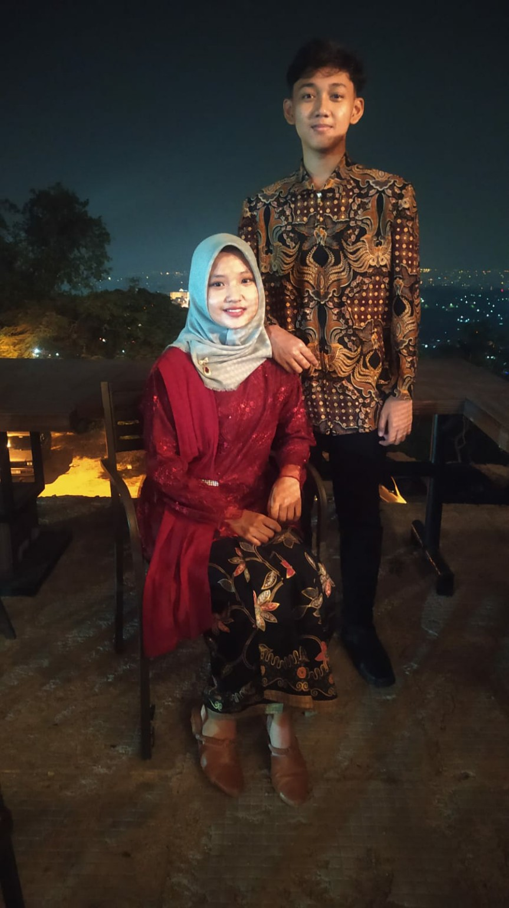
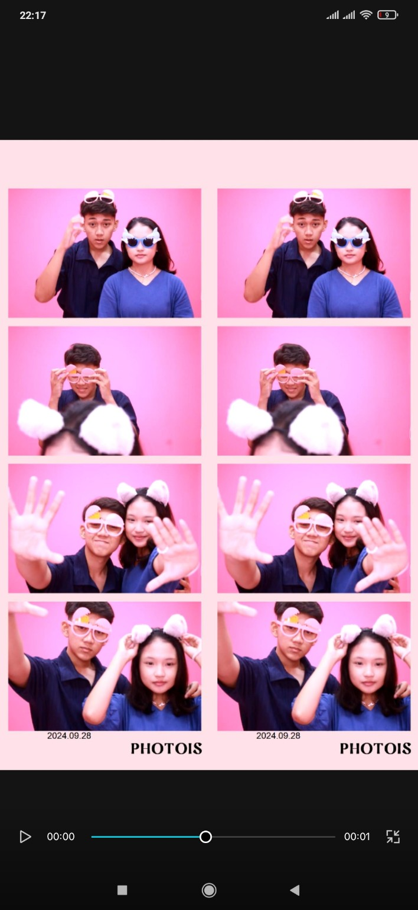
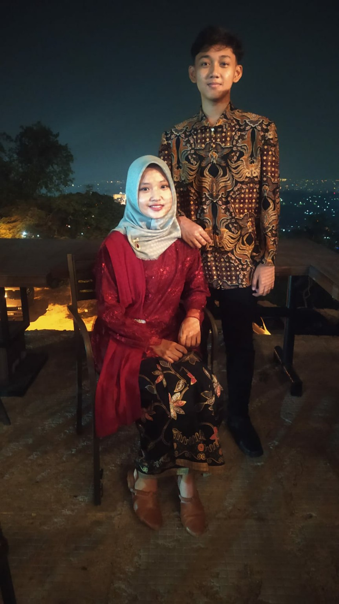
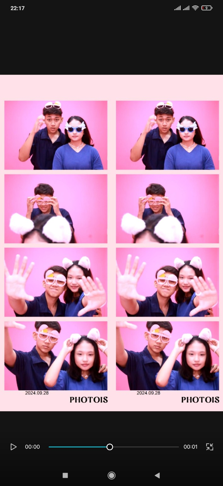

Di usia baru ini, aku ingin mengucapkan selamat ulang tahun yang paling tulus untukmu. Semoga segala doamu dikabulkan oleh Allah, terutama harapanmu untuk masuk ke Universitas yang kamu impikan. Di usia 18 ini, semoga kamu menjadi pribadi yang lebih bijak, lebih tangguh, dan tetap menjadi Sita yang hangat dan penuh semangat. Jangan ragu untuk bermimpi tinggi, karena kamu layak mendapatkan yang terbaik.
Dari aku yang selalu mendoakan kamu,
Van Danu
📸 Galeri Kenangan Kita
 


